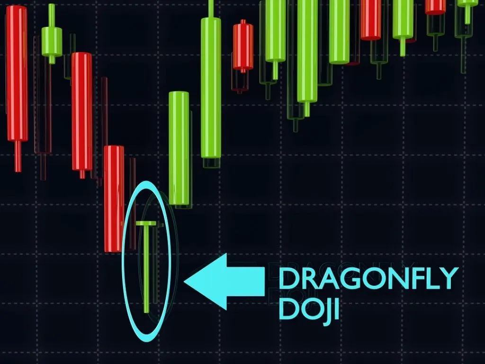
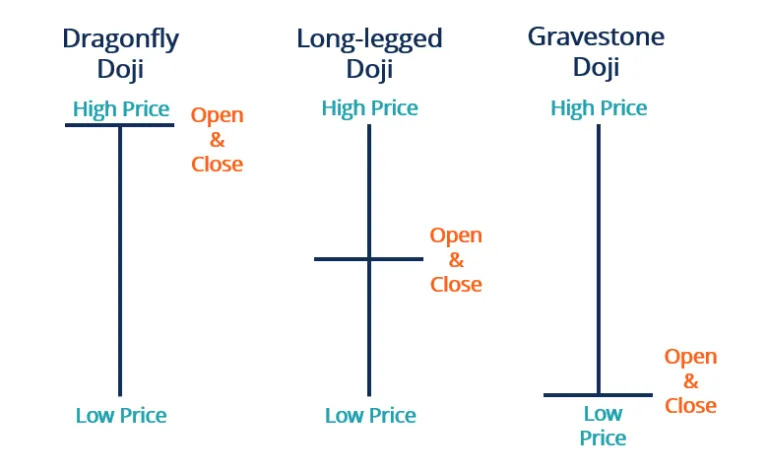

ड्रैगनफ्लाई डोजी कैंडलस्टिक एक कैंडलस्टिक पैटर्न है जिसमें किसी संपत्ति की खुली, बंद, और उच्च मूल्य स्तर समान होते हैं। ड्रैगनफ्लाई डोजी पैटर्न हमेशा नहीं दिखता है। यह एक तकनीकी संकेतक के रूप में उपयोग किया जाता है जो संपत्ति के मूल्य के एक पोतेंशियल रिवर्सल की संकेत देता है।
| Dragonfly Doji कैसा दिखता है ? |
ड्रेगनफ्लाई डोजी चार्ट पैटर्न एक "T" आकार का कैंडलस्टिक होता है जो खुले, ऊंचाई और बंद कीमतें बहुत समान होने पर बनता है। यह दुर्लभ होता है, लेकिन ड्रेगनफ्लाई एक ऐसा भी हो सकता है जब इन कीमतों में सभी कुछ समान होता है। ड्रेगनफ्लाई डोजी का सबसे महत्वपूर्ण हिस्सा लंबी निचली छाया होती है।

Summary
| What Does a Dragonfly Doji Candlestick Tell? |
एक ड्रैगनफ्लाई डोजी सुरक्षा मूल्य में एक संभावित पलटन की संकेत है। यह उस समय होता है जब सुरक्षा के खुले, बंद और उच्च मूल्य लगभग एक समान होते हैं। इस प्रकार, एक ड्रैगनफ्लाई डोजी ऊपर की पूछ बिना टी-आकार का होता है, लेकिन केवल एक लंबी निचली पूंछ होती है।

एक ड्रैगनफ्लाई डोजी लंबी निचली पुँछ को दर्शाती है जो बड़ी मात्रा में बेचने वालों को पता चलता है कि उन्होंने निश्चित अवधि के दौरान सुरक्षा मूल्य पर नीचे की ओर दबाव डाला है। तथापि, उस अवधि के अंत में, बंद होने वाली कीमत खुले मूल्य के स्तर पर रहती है। इससे प्रकट होता है कि बाजार में खरीदारों को इतनी बेचने की मात्रा को अवशोषित करने में सक्षम होने की क्षमता होती है और वे मूल्य को पुनः ऊपर खींच सकते हैं।
एक ड्रैगनफ्लाई डोजी मूल्य के उलट चलन का संकेतक हो सकता है। जब किसी सुरक्षा के मूल्य में एक नीचे की ओर अवधि दिखती है, तो यह आने वाले मूल्य वृद्धि का संकेत हो सकता है। इस मामले में यह बुलिश ड्रैगनफ्लाई होता है। यदि बुलिश ड्रैगनफ्लाई के बाद के कैंडलस्टिक में मूल्य बढ़ता हुआ बंद होता है, तो मूल्य का उलट चलन पुष्टि की जाती है और व्यापार निर्णय लिए जा सकते हैं।
उल्टे, जब बाजार में पहले से ऊपर की तरफ एक उतारव की त्रिज्या दर्शाई देती है, तो ड्रैगनफ्लाई डोजी एकमात्र उलटा संकेत देती है। यह एक बिशाल उछाल है जब इसके बाद का कैंडलस्टिक नीचे की ओर जाता है।
ट्रेडर ट्रेडिंग निर्णय लेने के लिए ड्रैगनफ्लाई डोजी का उपयोग कर सकते हैं। वे आमतौर पर पुष्टि कैंडलस्टिक के बाद ऑर्डर बनाने लगते हैं। एक ट्रेडर एक बुलिश ड्रैगनफ्लाई की निम्नतम कीमत के नीचे एक स्टॉप लॉस लंबाई कर सकता है या एक बियरिश ड्रैगनफ्लाई की उच्चतम कीमत के ऊपर एक स्टॉप लॉस शॉर्ट कर सकता है।
| Dragonfly Doji व्याख्या कैसे करें |
How to Interpret the Dragonfly Doji

| What Does a Dragonfly Doji Mean? |
ऊपर चार्ट 2 में मिनी-डाउ द्वारा, बाजार दिन की शुरुआत में डिमांड के प्रवेश के लिए जाँच करता रहा, कम कीमत के लिए समर्थन प्राप्त किया, लेकिन एक उत्तेजित उतार-चढ़ाव के लिए संकेत दिखाया। ड्रैगनफ्लाई की पुष्टि अगले दिन ट्रेंड की पुष्टि करके की जानी चाहिए।